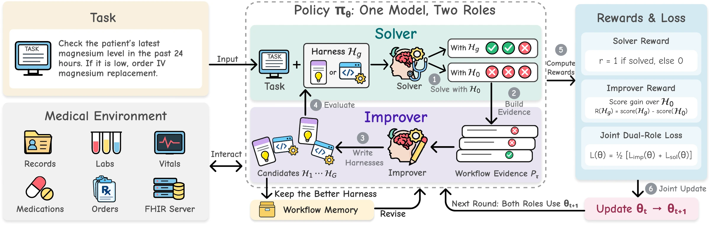
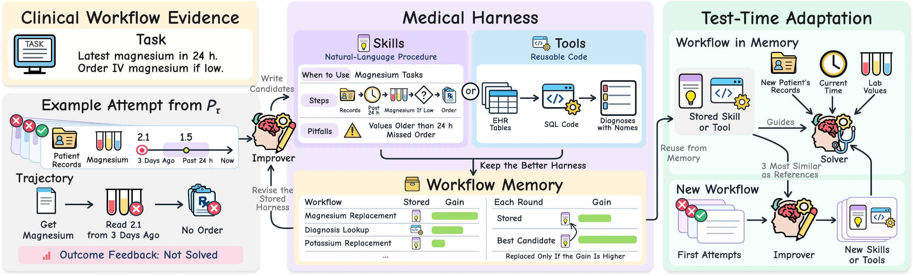
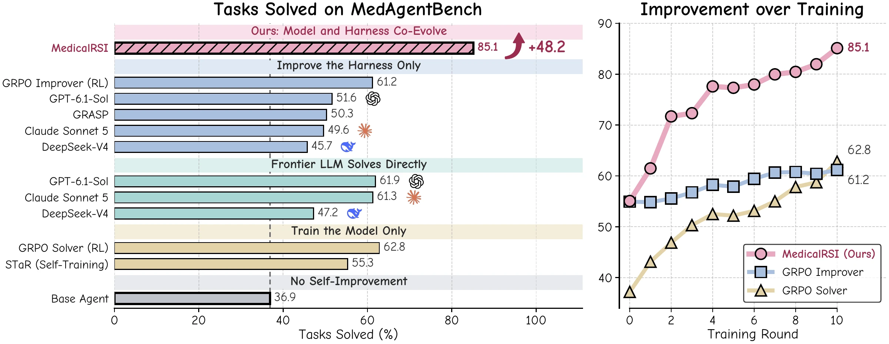
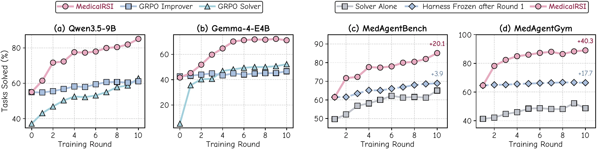
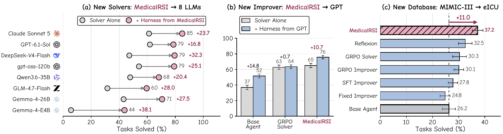
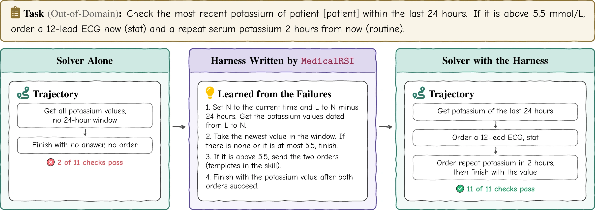

1
One workflow, many patients
Each patient has different records and needs, but the tasks share many checks, decisions and steps. Experience from one attempt can guide the next.
Medical Recursive Self-Improving Agents via Clinical Model-Harness Co-Evolution
One model carries out clinical workflows and writes its own medical harness from its failures. The agent improves not only itself but also its improving strategy.
Tasks solved on MedAgentBench (%)
Qwen3.5-9B, 320 test tasks. The dashed line marks the Base Agent.
+48.2 points over the Base Agent
The Solver is the medical agent itself. The Improver is its learnable improving strategy, which writes the medical harness from the agent's failures.
Each harness is rewarded by how much it improves the agent over acting without it, so no reference harness is needed.
Both roles learn from the same attempts, so the Improver keeps adapting to the problems the Solver has not yet solved.
On an electronic health record system, an agent retrieves laboratory results, records patient information and places orders. The same clinical workflow comes back for patient after patient.
Each patient has different records and needs, but the tasks share many checks, decisions and steps. Experience from one attempt can guide the next.
Most medical agents stay fixed once deployed and do not keep using this experience. The same kind of error recurs across patients.
Self-improving agents train the model or update the medical harness, but the strategy that decides these changes stays fixed. It never learns which changes actually help.
An agent improves not only itself but also its improving strategy.
Clinical workflows rarely come with a reference harness that tells the agent how to organize its steps, and the details differ across hospitals. The strategy can only learn from the outcomes of the agent's own attempts.
A change that fixes early errors may not fix the problems the agent meets later.
How can a medical agent continually improve its improving strategy from its own outcomes?
Each round turns the agent's failures into a better harness and a better model. The first eight steps follow an illustrative magnesium workflow. The last step is a real unseen workflow from MedAgentBench.
Check the patient's latest magnesium level in the past 24 hours. If it is low, order IV magnesium replacement.
Acts with H0, the plain harness with no skill or tool for this workflow.
Each attempt with its trajectory and its outcome feedback.
No reference answerPatients solved with the harness minus patients solved without it.
One point for each task it solves, with or without a harness.
Learns from task outcomes
Learns from harness gains
The same workflow serves many patients. Each patient has different records, but the steps are shared.
One model plays two roles through two prompts. Because both roles share the same weights, every update of the agent also updates its improving strategy.
The medical agent itself.
It carries out a clinical workflow on each patient's records by following the medical harness. It learns from the outcome of every task.
Its learnable improving strategy.
It reads the agent's latest failures and writes the medical harness. It learns from how much each harness helps the Solver.

A few failed and successful attempts with their outcome feedback. It never shows the reference answer or the grader's checks.
Each candidate harness adds one skill, a short procedure in plain language, or one tool, reusable code for a repeated operation.
Memory keeps the best skill or tool for each workflow and replaces it only when a new candidate gains more.
A harness earns what it adds over acting without it. It is credited for the failures it fixes and charged for the successes it breaks.
One loss trains both roles on the same attempts in every round, so the Improver keeps up with the Solver.
On a new workflow the weights stay fixed. The same model writes a harness from a few of its own failures.

On MedAgentBench and MedAgentGym, MedicalRSI outperforms context-level and weight-level self-improvement, and what it learns carries over to unseen workflows, other models and a new database.

| Method | What it changes | Training workflows | Unseen workflows | Overall |
|---|---|---|---|---|
| Base Agent | Nothing | 40.8 | 20.0 | 36.9 |
| GRASP | Harness | 54.6 | 31.7 | 50.3 |
| GPT-6.1-Sol writes the harness | Harness | 53.6 | 43.1 | 51.6 |
| GRPO Improver | Harness | 63.1 | 52.7 | 61.2 |
| STaR | Model | 61.2 | 30.0 | 55.3 |
| GRPO Solver | Model | 68.5 | 38.3 | 62.8 |
| MedicalRSI | Model and harness | 89.5 | 66.1 | 85.1 |
Tasks solved (%) on MedAgentBench with Qwen3.5-9B. Unseen workflows are held out from training. The paper reports every baseline, three backbones and bootstrap deviations.



@article{medicalrsi2026,
title = {MedicalRSI: Medical Recursive Self-Improving Agents
via Clinical Model-Harness Co-Evolution},
author = {Anonymous},
journal = {arXiv preprint},
year = {2026}
}
The arXiv identifier and the author list will be added when the paper is public.